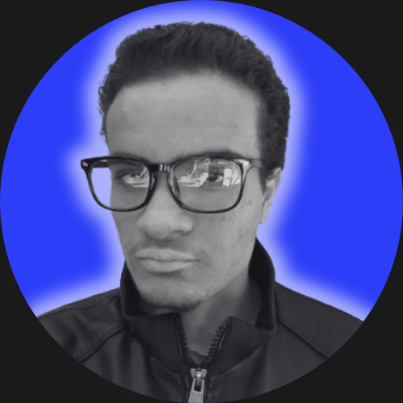

Gustavo Augusto
Frontend Developer
👋 Olá! Eu sou Gustavo Augusto!
Sou um estudante apaixonado por programação, mergulhando no mundo da tecnologia desde 2022. 🚀
Embora ainda não tenha tido a oportunidade de cursar uma faculdade de programação, dedico meus dias a aprender de forma independente, explorando conteúdos incríveis em canais do YouTube, sites especializados e comunidades de programadores. 💻📚
Meu objetivo é claro: me tornar um programador excelente e realizar grandes projetos. 💡✨
Seja muito bem-vindo(a) ao meu portfólio! Espero que goste do que preparei por aqui. 😄👍
Embora ainda não tenha tido a oportunidade de cursar uma faculdade de programação, dedico meus dias a aprender de forma independente, explorando conteúdos incríveis em canais do YouTube, sites especializados e comunidades de programadores. 💻📚
Meu objetivo é claro: me tornar um programador excelente e realizar grandes projetos. 💡✨
Seja muito bem-vindo(a) ao meu portfólio! Espero que goste do que preparei por aqui. 😄👍
